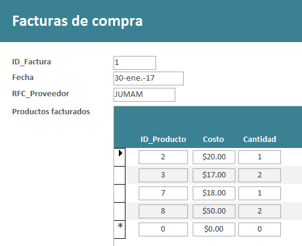
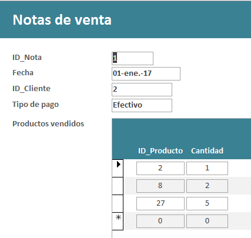

.
1.
Captura de datos
- La fruteria y
verdulería
“La Huerta” tiene toda su información en Excel, por lo que
necesitas copiar esta información a las tablas respectivas en la base de
datos. Abre la base de datos
LaHuertaf_matricula.accdb
y el archivo de Excel Datos.xls, y copia
la información correspondiente en cada tabla.
NOTA: Revisa
el manual de Capítulo
4. Formularios ya que ahí encontrarás las instrucciones de
¿Cómo capturar datos de Excel a tus tablas ?
- Copia los datos de
las tablas siguiendo el orden en que están los datos en Excel:
- PRODUCTOS
- CIUDADES
- CLIENTES
- NOTAS DE VENTA
-
NOTAS-PRODUCTOS
- FACTURAS DE
COMPRA
- FACTURAS-PRODUCTOS
- PROVEEDORES
- PROVEEDORES-PRODUCTOS.
2. Creación de formularios
1. FORMULARIO DE LA TABLA DE PRODUCTOS
.
- Tabla a utilizar Productos.
- Se deben incluir todos los campos.
- Utiliza una
distribución de tipo de Tabular.
- Guarda el Formulario con el nombre de: Productos.
- Centra el contenido de
los cuadros de texto.
2. FORMULARIO DE LA TABLA DE
CIUDADES
- Tabla a utilizar
Ciudades.
- Se deben incluir
todos los campos.
- Utiliza una
distribución de tipo Tabular.
- Guarda el
Formulario con el nombre de: Ciudades.
- Centra el
contenido de los cuadros de texto.
Formulario con distribución en Columnas
3. FORMULARIO DE LA TABLA DE CLIENTES
- Tabla a utilizar
Clientes.
- Se deben incluir
todos los Campos.
- Utiliza una
distribución de tipo En Columnas.
- Guarda el
Formulario con el nombre de: Clientes.
- Alinea el
contenido de los cuadros de texto hacia la izquierda.
Formularios con subformularios
Vas a crear un formulario con un
subformulario, que permita capturar al mismo tiempo los datos de la
tabla de Facturas y de la tabla de Facturas_Productos.
4. FORMULARIO DE LA TABLA DE
FACTURAS DE COMPRA CON UN SUBFORMULARIO DE LA TABLA DE
FACTURAS_PRODUCTOS
- Tablas a utilizar Facturas de compra, seleccionando todos los
campos y Facturas_Productos seleccionando los campos de
ID_Producto, Costo y Cantidad.
- El formulario principal deberá ser de la tabla de Facturas de
compra y el subformulario de la tabla de Facturas_Productos.
- La distribución del subformulario debe de ser Tabular.
- El nombre del formulario deberá ser Facturas de compra y el del
subformulario Productos
facturados.
- Dale un buen formato a tu formulario y subformulario, alineando y
ajustando el tamaño de los cuadros de texto.


|